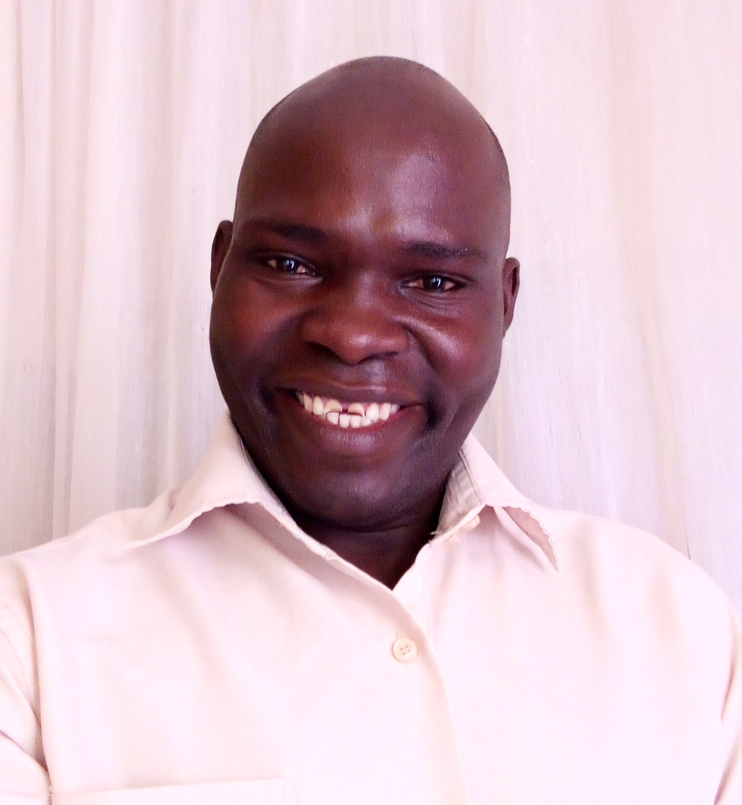

CONTACT
Muni University
Arua-Muni-Ocoko Road P.O Box 725, Arua City Phone: +256-774-207563 Email: benardocen7@gmail.com COMMUNICATIONI have received several awards for my outstanding communication skills, including recorgnition for providing exceptional customer care and guidance LEADERSHIPI was recorgnised for my performance in He-motion innitiative for students with disability, and linking students to the various scholarship programs |
BENARD OCENSTUDENTObjectiveI am seeking a challenging career opportunity where I can exploit my potentials and contribute to the organisation EDUCATION BACKGROUNDMuni University-August 2024 up to date-Bachelor of Information Systems EXPERIENCE2017 -2024 / Ajalo General Stores / Manager REFERENCEMrs. Monica Bahati/Director Ajalo Co. Ltd / 0774721526 |